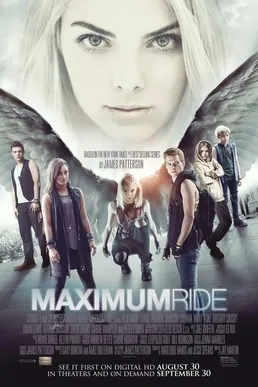

The genetics
Genetic engineering creates the premise: the heroes are children altered in a secret, apparently government-run laboratory so that they have wings, and their enemies, the Erasers, are human–wolf hybrids. The film presents the School as a place of cruel experimentation, with children kept in cages, implanted with tracking chips and treated as expendable. Jeb, the scientist who made the Flock and also rescued them, is ambiguous: he insists they were created to help people and save the world, but they no longer trust him, and the story ends with Max declaring the experiment over. Reviewers complained that the film never explains what the experiments are, so the genetics remains a backdrop for a teen adventure. Adding functional wings to a human would require far more than a few genes and is beyond any real technology.
How genetics is portrayed
- Overall portrayal of genetics
- negative Genetic experimentation on children is presented as controlling and cruel, and the heroes' victory is declaring 'the experiment's over'.
- Outcome of the genetic intervention
- negative The experiments produce hunted, caged children and violent hybrid enforcers; the children's flight is their only asset, used to escape their makers.
- Dr. Jeb Batchelder
- ambivalent Aim: benevolent, curiosity (mixed). He created the winged children, rescued them and claims they were made 'to help people and save the world', yet keeps studying them, chips them and pleads with them to stay; the children reject him.
- The School (whitecoats and Erasers)
- villain Aim: not stated (not applicable). The secret laboratory engineers children and wolf hybrids, cages the Flock and treats them as 'expendable, but dangerous'; the film never says what the experiments are for.
The story
Based on James Patterson's novels, the film follows the Flock, six children with wings who can fly, created by experiments at the School, a secret laboratory in Death Valley. Rescued years earlier by the scientist Jeb Batchelder, they live hidden in a house in the Rocky Mountains under the leadership of the oldest, Max. When the youngest, Angel, is captured by Erasers, wolf-hybrid enforcers led by Jeb's son Ari, Max and Fang set out to rescue her. Max is shot while saving a girl in Utah and, during surgery at a veterinary clinic, learns that she carries a tracking chip. The Erasers use the chips to capture the whole Flock, who wake up in cages at the School. Jeb tells Max she was created to save the world, but the children escape. Max declares the experiment over, and they set out for New York to learn about their origins.